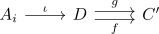
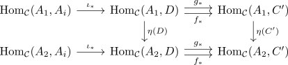

extension of a natural transformation from a covariant hom functor for a category with enough injectives and regular monos
Proposition
Let $\mathcal{C}$ be a category, $\mathcal{D} \hookrightarrow \mathcal{C}$ a (full) subcategory such that for each object $C \in \mathcal{C}$ there exists a regular monomorphism
for $D \in \mathrm{Ob}(\mathcal{D})$ as injective object in $\mathcal{C}$
Let $A_1,A_2 \in \mathcal{C}$ are objects, $\mathcal{D} \cup A_i$ the full subcategory containing $\mathcal{D}$ and $A_1,A_2$.
is a natural transformation.
Then there exists an extension of $\eta$ in
Proof
Choose a regular mono
Then by assumption there exist morphisms
such that

is an equalizer
By enough injectives, regular monomorphism and equalizer between injective objects we may assume w.l.o.g. that $C' \in \mathcal{D}$
Then as the covariant hom-functor preserves small limits we get a diagram, where the rows are equalizers

Then it follows that
induces a unique morphism
as
where the first and last equality follow from naturality of $\eta(-)$ and the middle follows from the row above being a fork
naturality
injective objects
general objects
Let $\mathcal{I} \hookrightarrow \mathcal{D}$ be the full subcategory containing $A_1$ and injective objects. Then we have $\eta$ as natural transformation
hence it corresponds by the contravariant Yoneda Lemma to an element
This provides an extension (?)
- natural transformations in $\mathrm{Fun}(\mathcal{D}, \mathrm{Set})$ are a subset of $\mathrm{Fun}(\mathcal{I} \setminus \{A_1\}, \mathrm{Set})$